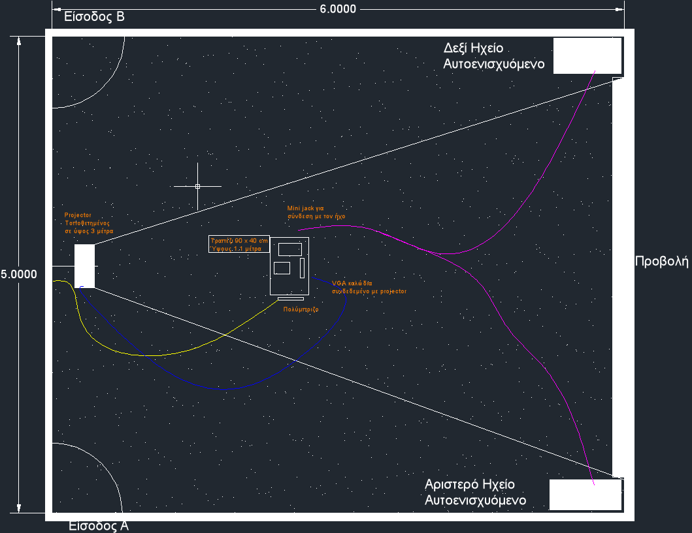

WireFace: an AudioVisual Installation
Table of Contents
1 Description
(Anti-Concept) Το wireFace αποτελεί μια άλλη οπτική γωνία του φαίνεσθαί, όπως μπορεί να το αντιληφθεί μια μηχανή. Ο παίχτης με την είσοδο του στο ορατό πεδίο της μηχανής εισοδέυει στον δυνητικό κόσμο της εγκατάστασης και αλληλεπιδρά με αυτόν. Η 3-διάστατη κάμερα επεξεργάζεται σε πραγματικό χρόνο το πρόσωπο του θεατή και το αποδίδει με την μορφή 3-διάστατου πλέγματος. Η κίνηση του μοντέλου και το ηχητικό περιβάλλον παραμετροποιούνται και μεταβάλλονται συναρτήση της κίνησης του παίχτη. Ένα εικαστικό παιχνίδι στον δυνητικό κόσμο της 3-διάστατης όρασης των υπολογιστών.
2 Setup
Για την εγκατάσταση χρησιμοποιείται η δωρεάν και ανοικτού κώδικα γλώσσα προγραμματισμού SuperCollider και το επίσης δωρεάν και ανοικτού κώδικα C++ σασί για προγραμματισμό οπτικοακουστικών εφαρμογών openFrameworks. Επίσης χρησιμοποιείται ο αισθητήρας Xbox kinect έτσι όπως ανπτύχθηκε απο την ανοικτή κοινότητα OpenKinect. Τέλος για την δημιουργία της διεπαφής πολλαπλής αφής OSC στο iPad, χρησιμοποιήθηκε το λογισμικό - εφαρμογή iPad TouchOSC.
Μια εγκατάσταση - εφαρμογή φτιαγμένη απο εργαλεία ανοικτού κώδικα δεν θα μπορούσε να μην ήταν και αυτή ανοικτή. Ο κώδικας βρίσκεται στο github.
3 Installation setup

4 Technics
- Όραση Υπολογιστών
- Συναισθησία: διάδραση ήχου - εικόνας
5 ScreenShots
6 About
- WireFace official site
- igoumeninja : Aris Bezas personal website
- EarLab : Experimental Arts Laboratory (Iannis Zannos and members)
- iperatou : Interactive Audiovisual Performances by Dakis Trentos, Omer Chatziserif, Aris Bezas
7 website
Ο ιστότοπος http://wireface.com/ είναι σχεδιασμένος και προγραμματισμένος σε ProcessingJS η οποιά αποτελεί μια διεπαφή της Processing για JavaScript.
- links:
- Rendering Modes
8 Special thanks
Date: <2011-07-01 Fri>
HTML generated by org-mode 7.4 in emacs 23